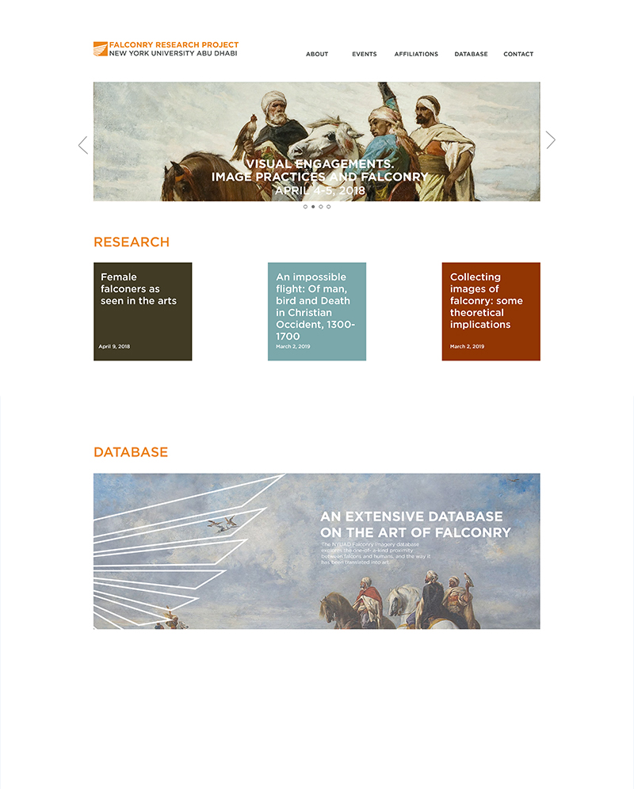
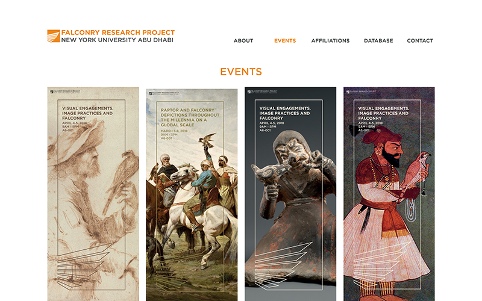
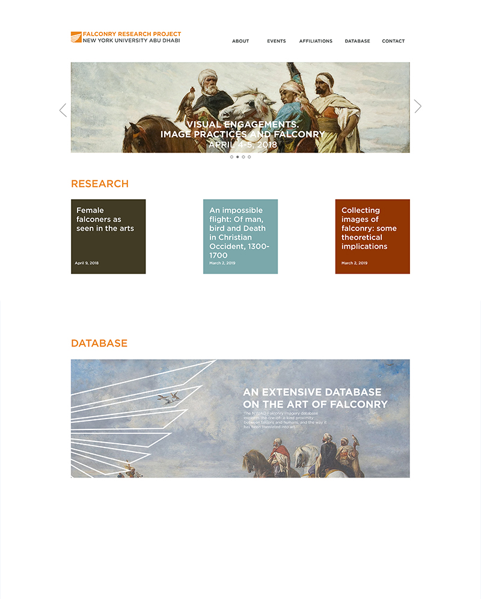
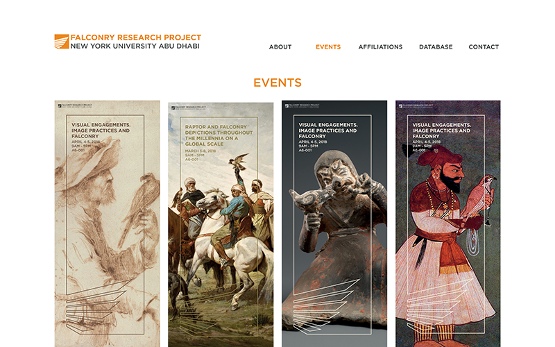

As a new and upcoming project of NYUAD, the Falconry Research Project (FRP) needs to establish a memorable identity both internally and externally. Internally, the FRP encounters the challenge of distinguishing itself from the most famous falcon image on campus - our mascot Faiza The Falcon. In response to this problem, the logo proposed for the FRP is inspired by, not the face of the falcon, but its wings. Unlike other birds’ wings, the falcon’s wings feature sharp-edged feathers. And thus the logo is drawn to reflect this unique characteristic.
In order to illustrate the exibility of the logo, I use it as a frame for the information on posters, banners, the web page, and so on. The frame can greatly complement the art, which is available in vast amounts from the developing database.
In regard to the color of the logo, the “desert sun” orange from the NYUAD brand colors
is chosen to portray the vibrance and power of falcons and also to create a desert-like background for the wing to soar over. The text is set in Gotham to maintain consistency with the NYUAD brand.


 


